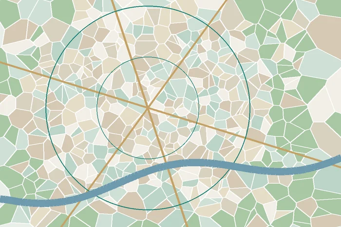

01Planning
Cities & Municipalities
Urbanisation, planning, land-use policy and local infrastructure.
Relevant questions / outputsLand-use mapping; transport accessibility; public space; municipal service studiesExplore service topicsBrowse 30 sectors where SPEDAR offers multidisciplinary research, engineering, environmental, sustainability and digital consulting services.


Illustrative website graphics, not client projects or survey data.
24 sectors, connected by a common need for reliable evidence, contextual knowledge and useful outputs.
Showing 30 sectors
Urbanisation, planning, land-use policy and local infrastructure.
Relevant questions / outputsLand-use mapping; transport accessibility; public space; municipal service studiesExplore service topicsService access, rural infrastructure and livelihoods.
Relevant questions / outputsVillage mapping; participatory studies; rural digital inclusionExplore service topicsTransport corridors, safety, accessibility and environmental exposure.
Relevant questions / outputsTraffic survey; corridor screening; roadside land-use analysisExplore service topicsMobility, accessibility, station-area planning and impact research.
Relevant questions / outputsTransit accessibility; socioeconomic assessment; GIS corridor analysisExplore service topicsPort-area planning, river/coastal spatial evidence and environmental risk.
Relevant questions / outputsPort access analysis; coastal GIS; specialist hydrographic scopingExplore service topicsEnvironmental exposure and land-use considerations around airports.
Relevant questions / outputsAir quality data review; land-use zoning; specialist aviation modellingExplore service topicsCrossings, flood exposure and infrastructure site feasibility.
Relevant questions / outputsSite mapping; hydrological data compilation; specialist design reviewExplore service topicsCatchment, surface-water and irrigation needs.
Relevant questions / outputsWater resource mapping; agricultural demand research; modelling collaborationExplore service topicsChannel dynamics, erosion and coastal risk.
Relevant questions / outputsBankline change mapping; erosion research; specialist river modellingExplore service topicsWater access, sanitation and municipal WASH planning.
Relevant questions / outputsService coverage surveys; monitoring dashboards; specialist design inputExplore service topicsSolid waste research and resource recovery feasibility.
Relevant questions / outputsWaste characterization; GIS siting; material flow analysisExplore service topicsEnergy sites, environmental baselines and sustainability.
Relevant questions / outputsSite suitability GIS; resource datasets; specialist safeguards studiesExplore service topicsSolar and clean energy opportunities.
Relevant questions / outputsLand suitability; environmental screening; community survey researchExplore service topicsIndustrial land, logistics, workers and environmental evidence.
Relevant questions / outputsLocation analysis; utility mapping; socioeconomic baselineExplore service topicsCrop, land and forest ecosystem management.
Relevant questions / outputsCrop mapping; vegetation analysis; climate-risk evidenceExplore service topicsAquatic habitats, livelihoods and coastal resource management.
Relevant questions / outputsWetland GIS; livelihood surveys; aquatic resource data reviewExplore service topicsUniversity facilities, access and development research.
Relevant questions / outputsCampus site analysis; pedestrian access; spatial master plan supportExplore service topicsCommunity exposure, service access and equity.
Relevant questions / outputsHealth accessibility mapping; vulnerability research; MELExplore service topicsHazard exposure and practical adaptation evidence.
Relevant questions / outputsHeat and flood maps; risk indicators; community adaptation researchExplore service topicsConservation, ecological connectivity and restoration.
Relevant questions / outputsForest cover analysis; habitat mapping; ecosystem researchExplore service topicsVisitor access, place identity and environmental management.
Relevant questions / outputsRecreation mapping; tourism impact surveys; landscape scopingExplore service topicsDigital reporting, data access and analytics.
Relevant questions / outputsGovernment dashboards; web GIS; survey data platformsExplore service topicsResearch, digital products and strategic planning services.
Relevant questions / outputsCorporate websites; GIS analysis; impact reporting; designExplore service topicsLand suitability, neighbourhood planning and accessibility.
Relevant questions / outputsPlot suitability; settlement mapping; site planning researchExplore service topicsApparel factories, wet processing and supply-chain environmental performance.
Relevant questions / outputsHigg FEM readiness; chemical management; ETP and air-emission studies; energy auditsExplore related servicesEnvironmental safeguards and industrial resource efficiency for regulated manufacturing.
Relevant questions / outputsAir quality; chemical storage; waste management; environmental due diligenceExplore related servicesFacility compliance, pollution prevention, environmental testing and efficiency.
Relevant questions / outputsEnvironmental inspections; EHS; carbon footprint; cleaner productionExplore related servicesNew and existing building sustainability and environmental performance.
Relevant questions / outputsLEED documentation support; energy and water efficiency; carbon reductionExplore related servicesFinancial sustainability, climate disclosure and reporting systems.
Relevant questions / outputsESG reporting; carbon inventories; fintech systems; climate risk screeningExplore related servicesSpatial, engineering, environmental and investment advisory for industrial estates.
Relevant questions / outputsSite screening; feasibility; planning; impact assessment; utilitiesExplore related servicesWe align a potential assignment to available skills and verify whether any licensed or specialist collaborators are required.